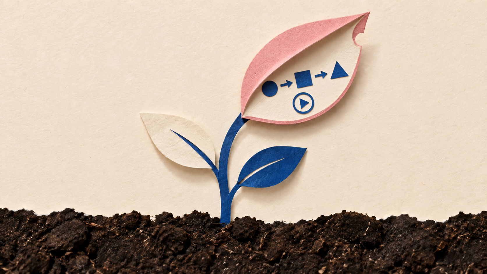
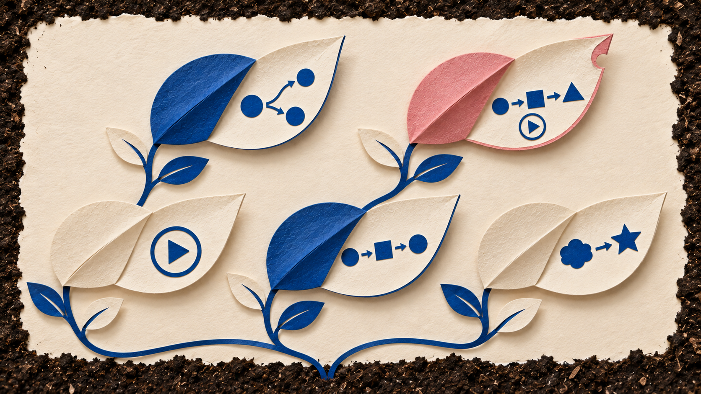

Concept storyboard—not animated output. Three connected Image Gen stills testing the paper-leaf transformation.


Visual review: the pink leaf’s notch, color and diagram carry continuity. The overhead view retains soil, leaves and stems. Diagrams are symbolic placeholders, not finished teaching content. These flattened concepts do not establish fold mechanics or animation continuity; individual cutouts and intermediate poses remain future work.